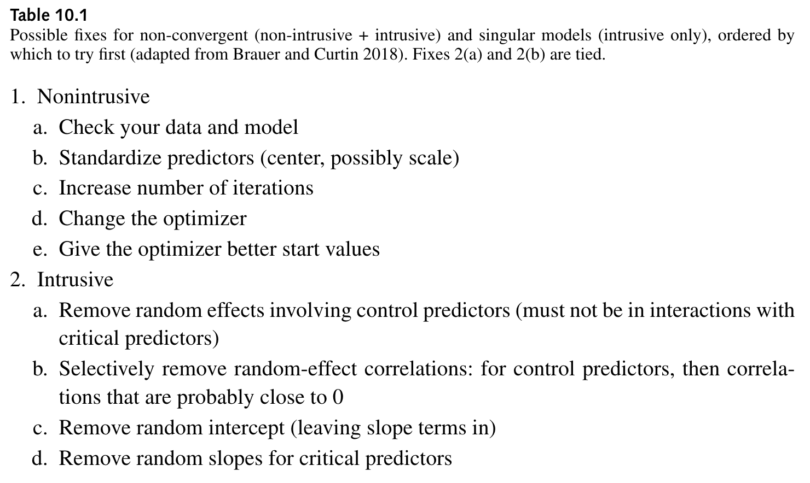

Code
fit_verb_fp_mm <- lmer(log(fp) ~ verb_t*gramm +
(1 + verb_t*gramm|sj) +
(1 + verb_t*gramm|item),
data = df_biondo,
subset = roi == 4)Strolling through the garden of forking paths
This chapter is not fully translated from bullet points (from my slides) to prose. This will happen eventually (hopefully by spring 2024).
Today we will learn about…
and how to…
A maximal model should optimize generalization of the findings to new subjects and new items.
– Barr et al. (2013), p. 261
[W]hile the maximal model indeed performs well as far as Type I error rates were concerned, power decreases substantially with model complexity.
— Matuschek et al. (2017), p. 310-311
Every statistical model is a description of some real or hypothetical state of affairs in the world.
– Yarkoni (2022), p. 2
fit_verb_fp_mm <- lmer(log(fp) ~ verb_t*gramm +
(1 + verb_t*gramm|sj) +
(1 + verb_t*gramm|item),
data = df_biondo,
subset = roi == 4)# obvz per sj per condition
df_biondo |>
filter(roi == 4) |>
count(sj, verb_t, gramm) |>
count(n)# A tibble: 1 × 2
n nn
<int> <int>
1 16 240# obvz per item per condition
df_biondo |>
filter(roi == 4) |>
count(item, verb_t, gramm) |>
arrange(desc(n)) |>
count(n)# A tibble: 1 × 2
n nn
<int> <int>
1 10 384What we hope to make clear is that there is no single correct way in which LMM analyses should be conducted, and this has important implications for how the reporting of LMMs should be approached.
— Meteyard & Davies (2020), p. 9
Replicability and reproducibility are critical for scientific progress, so the way in which researchers have implemented LMM analysis must be entirely transparent. We also hope that the sharing of analysis code and data becomes widespread, enabling the periodic re-analysis of raw data over multiple experiments as studies accumulate over time.
— Meteyard & Davies (2020), p. 9
We’ll now look at an example of a model that encounters convergence issues, and take some steps to reach convergence. We are considering a case where your predictors and covariates are already selected, and will focus on selecting model options and random effects structure that achieve model convergence.
We first need to set up our environment.
## suppress scientific notation
options(scipen=999)## load libraries
pacman::p_load(
tidyverse,
here,
janitor,
## new packages for mixed models:
lme4,
lmerTest,
broom.mixed,
lattice)lmer <- lmerTest::lmerdf_biondo <-
read_csv(here("data", "Biondo.Soilemezidi.Mancini_dataset_ET.csv"),
locale = locale(encoding = "Latin1") ### for special characters in Spanish
) |>
clean_names() |>
mutate(gramm = ifelse(gramm == "0", "ungramm", "gramm")) |>
mutate_if(is.character,as_factor) |> ## all character variables as factors
droplevels() |>
filter(adv_type == "Deic")contrasts(df_biondo$verb_t) <- c(-0.5,+0.5)
contrasts(df_biondo$gramm) <- c(-0.5,+0.5)contrasts(df_biondo$verb_t) [,1]
Past -0.5
Future 0.5contrasts(df_biondo$gramm) [,1]
gramm -0.5
ungramm 0.5fit_verb_fp_mm <- lmer(log(fp) ~ verb_t*gramm +
(1 + verb_t*gramm|sj) +
(1 + verb_t*gramm|item),
data = df_biondo,
subset = roi == 4)nloptwrap from bobyqa, there seem to be more ‘false positive’ convergence warnings
non-intrusive remedies amount to checking/adjusting data and model specifications
intrusive remedies involve reducing random effects structure
each strategy has its drawback
?convergence?convergence in the Console and read the vignette
?isSingularlme4::allFit(model) (can take a while to run)all_fit_verb_fp_mm <- allFit(fit_verb_fp_mm)
## bobyqa : boundary (singular) fit: see help('isSingular')
## [OK]
## Nelder_Mead : [OK]
## nlminbwrap : boundary (singular) fit: see help('isSingular')
## [OK]
## nmkbw : [OK]
## optimx.L-BFGS-B : boundary (singular) fit: see help('isSingular')
## [OK]
## nloptwrap.NLOPT_LN_NELDERMEAD : boundary (singular) fit: see help('isSingular')
## [OK]
## nloptwrap.NLOPT_LN_BOBYQA : boundary (singular) fit: see help('isSingular')
## [OK]
## There were 11 warnings (use warnings() to see them)default optimizer for lmer() is nloptwrap, formerly bobyqa (Bound Optimization by Quaradric Approximiation)
bobyqa helpssee ?lmerControl for more info
if fits are very similar (or all optimizeres except the default), the nonconvergent fit was a false positive
summary(all_fit_verb_fp_mm)$llik bobyqa Nelder_Mead
-2105.109 -2179.479
nlminbwrap nmkbw
-2105.106 -2105.109
optimx.L-BFGS-B nloptwrap.NLOPT_LN_NELDERMEAD
-2105.106 -2105.106
nloptwrap.NLOPT_LN_BOBYQA
-2105.106 summary(all_fit_verb_fp_mm)$fixef (Intercept) verb_t1 gramm1 verb_t1:gramm1
bobyqa 5.956403 0.06170602 0.003369634 -0.01418865
Nelder_Mead 5.956350 0.06188102 0.003488675 -0.01397531
nlminbwrap 5.956403 0.06170726 0.003369637 -0.01419047
nmkbw 5.956404 0.06170653 0.003369153 -0.01419036
optimx.L-BFGS-B 5.956403 0.06170717 0.003369787 -0.01419044
nloptwrap.NLOPT_LN_NELDERMEAD 5.956403 0.06170725 0.003369649 -0.01419046
nloptwrap.NLOPT_LN_BOBYQA 5.956403 0.06170771 0.003369203 -0.014191841e5 in scientific notation)## check n of iterations
fit_verb_fp_mm@optinfo$feval[1] 2318lmerControl()fit_verb_fp_mm <- lmer(log(fp) ~ verb_t*gramm +
(1 + verb_t*gramm|sj) +
(1 + verb_t*gramm|item),
data = df_biondo,
subset = roi == 4,
control = lmerControl(optimizer = "bobyqa",
optCtrl = list(maxfun = 2e5))
)fit_verb_fp_mm <- update(fit_verb_fp_mm,
control = lmerControl(optimizer = "bobyqa",
optCtrl = list(maxfun = 2e5)))boundary (singular) fit: see help('isSingular')Warning: Model failed to converge with 1 negative eigenvalue: -5.3e-01summary(rePCA(model)), lme4 package)
VarCorr(model))summary(rePCA(fit_verb_fp_mm))$item
Importance of components:
[,1] [,2] [,3] [,4]
Standard deviation 0.3638 0.2493 0.08366 0.000000000000000001309
Proportion of Variance 0.6567 0.3085 0.03474 0.000000000000000000000
Cumulative Proportion 0.6567 0.9653 1.00000 1.000000000000000000000
$sj
Importance of components:
[,1] [,2] [,3] [,4]
Standard deviation 0.6490 0.01470 0.000001281 0.00000001467
Proportion of Variance 0.9995 0.00051 0.000000000 0.00000000000
Cumulative Proportion 0.9995 1.00000 1.000000000 1.00000000000VarCorr(fit_verb_fp_mm)VarCorr(fit_verb_fp_mm) Groups Name Std.Dev. Corr
item (Intercept) 0.139189
verb_t1 0.055890 0.488
gramm1 0.022569 -0.109 -0.921
verb_t1:gramm1 0.095314 -0.283 0.456 -0.646
sj (Intercept) 0.257535
verb_t1 0.018296 0.974
gramm1 0.012055 0.960 0.872
verb_t1:gramm1 0.017731 0.991 0.934 0.990
Residual 0.399095 gramm because it has the lowest variance, and has a pretty high correlation with verb_t (which is unlikely to be true)gramm for participant for the same reason, as well as its high correlation with the intercept and verb_tfit_verb_fp_m1 <- lmer(log(fp) ~ verb_t*gramm +
(1 + verb_t+gramm|sj) +
(1 + verb_t+gramm|item),
data = df_biondo,
subset = roi == 4,
control = lmerControl(optimizer = "bobyqa",
optCtrl = list(maxfun = 2e5))
)boundary (singular) fit: see help('isSingular')rePCA()summary(rePCA(fit_verb_fp_m1))$item
Importance of components:
[,1] [,2] [,3]
Standard deviation 0.3559 0.1291 0.00000007181
Proportion of Variance 0.8837 0.1163 0.00000000000
Cumulative Proportion 0.8837 1.0000 1.00000000000
$sj
Importance of components:
[,1] [,2] [,3]
Standard deviation 0.6465 0.0000006824 0
Proportion of Variance 1.0000 0.0000000000 0
Cumulative Proportion 1.0000 1.0000000000 1VarCorr()VarCorr(fit_verb_fp_m1) Groups Name Std.Dev. Corr
item (Intercept) 0.139274
verb_t1 0.055550 0.489
gramm1 0.020747 -0.117 -0.924
sj (Intercept) 0.257657
verb_t1 0.017584 1.000
gramm1 0.011554 1.000 1.000
Residual 0.399869 lattice::dotplot(ranef(fit_verb_fp_m1))$item
lattice::dotplot(ranef(fit_verb_fp_m1))$sj
fit_verb_fp_m2 <- lmer(log(fp) ~ verb_t*gramm +
(1 |sj) +
(1 + verb_t+gramm|item),
data = df_biondo,
subset = roi == 4,
control = lmerControl(optimizer = "bobyqa",
optCtrl = list(maxfun = 2e5))
)boundary (singular) fit: see help('isSingular')rePCA()summary(rePCA(fit_verb_fp_m2))$item
Importance of components:
[,1] [,2] [,3]
Standard deviation 0.3559 0.1297 0.00000001647
Proportion of Variance 0.8827 0.1173 0.00000000000
Cumulative Proportion 0.8827 1.0000 1.00000000000
$sj
Importance of components:
[,1]
Standard deviation 0.6441
Proportion of Variance 1.0000
Cumulative Proportion 1.0000VarCorr()VarCorr(fit_verb_fp_m2) Groups Name Std.Dev. Corr
item (Intercept) 0.139364
verb_t1 0.055805 0.485
gramm1 0.020546 -0.097 -0.917
sj (Intercept) 0.257648
Residual 0.399995 gramm and verb_t are highly correlatedgramm has least variance, so let’s remove itlattice::dotplot(ranef(fit_verb_fp_m2))$itemfit_verb_fp_m3 <- lmer(log(fp) ~ verb_t*gramm +
(1 |sj) +
(1 + verb_t|item),
data = df_biondo,
subset = roi == 4,
control = lmerControl(optimizer = "bobyqa",
optCtrl = list(maxfun = 2e5))
)rePCA()summary(rePCA(fit_verb_fp_m3))$item
Importance of components:
[,1] [,2]
Standard deviation 0.3553 0.10311
Proportion of Variance 0.9223 0.07768
Cumulative Proportion 0.9223 1.00000
$sj
Importance of components:
[,1]
Standard deviation 0.6438
Proportion of Variance 1.0000
Cumulative Proportion 1.0000VarCorr()VarCorr(fit_verb_fp_m3) Groups Name Std.Dev. Corr
item (Intercept) 0.139365
verb_t1 0.050134 0.542
sj (Intercept) 0.257714
Residual 0.400315 verb_t, so let’s run that modelfit_verb_fp_m4 <- lmer(log(fp) ~ verb_t*gramm +
(1 |sj) +
(1 + gramm|item),
data = df_biondo,
subset = roi == 4,
control = lmerControl(optimizer = "bobyqa",
optCtrl = list(maxfun = 2e5))
)boundary (singular) fit: see help('isSingular')verb_t slopesfit_verb_fp <- fit_verb_fp_m3lattice::dotplot(ranef(fit_verb_fp))$sjlattice::dotplot(ranef(fit_verb_fp))$item
summary()summary(fit_verb_fp)Linear mixed model fit by REML. t-tests use Satterthwaite's method [
lmerModLmerTest]
Formula: log(fp) ~ verb_t * gramm + (1 | sj) + (1 + verb_t | item)
Data: df_biondo
Control: lmerControl(optimizer = "bobyqa", optCtrl = list(maxfun = 200000))
Subset: roi == 4
REML criterion at convergence: 4216.2
Scaled residuals:
Min 1Q Median 3Q Max
-4.1758 -0.6096 -0.0227 0.6060 4.0568
Random effects:
Groups Name Variance Std.Dev. Corr
item (Intercept) 0.019423 0.13936
verb_t1 0.002513 0.05013 0.54
sj (Intercept) 0.066417 0.25771
Residual 0.160252 0.40032
Number of obs: 3795, groups: item, 96; sj, 60
Fixed effects:
Estimate Std. Error df t value Pr(>|t|)
(Intercept) 5.956384 0.036763 79.243172 162.021 < 0.0000000000000002
verb_t1 0.061733 0.013971 93.410519 4.419 0.0000267
gramm1 0.003298 0.012999 3544.451690 0.254 0.80
verb_t1:gramm1 -0.014380 0.025998 3544.762213 -0.553 0.58
(Intercept) ***
verb_t1 ***
gramm1
verb_t1:gramm1
---
Signif. codes: 0 '***' 0.001 '**' 0.01 '*' 0.05 '.' 0.1 ' ' 1
Correlation of Fixed Effects:
(Intr) vrb_t1 gramm1
verb_t1 0.077
gramm1 0.000 -0.002
vrb_t1:grm1 0.000 0.002 0.000rePCA() + VarCorr() -> run model -> … -> converges -> only NOW run summary(model)fit_verb_fp_intercepts <- lmer(log(fp) ~ verb_t*gramm +
(1 |sj) +
(1 |item),
data = df_biondo,
subset = roi == 4
)sum_fit_verb_fp <-
tidy(fit_verb_fp,
effects = "fixed") |>
as_tibble() |>
mutate(p_value = p.value,
model = "parsimonious")
sum_fit_verb_fp_mm <-
tidy(fit_verb_fp_mm,
effects = "fixed") |>
as_tibble() |>
mutate(p_value = p.value,
model = "maximal")
sum_fit_verb_fp_intercepts <-
tidy(fit_verb_fp_intercepts,
effects = "fixed") |>
as_tibble() |>
mutate(p_value = p.value,
model = "intercepts")rbind(sum_fit_verb_fp, sum_fit_verb_fp_intercepts, sum_fit_verb_fp_mm) |>
select(term, estimate, model) |>
mutate(estimate = round(estimate,4)) |>
pivot_wider(
id_cols = c(term),
names_from = model,
values_from = estimate
) |>
mutate(measure = "estimate") |>
kable() |>
kable_styling()| term | parsimonious | intercepts | maximal | measure |
|---|---|---|---|---|
| (Intercept) | 5.9564 | 5.9564 | 5.9564 | estimate |
| verb_t1 | 0.0617 | 0.0619 | 0.0617 | estimate |
| gramm1 | 0.0033 | 0.0032 | 0.0034 | estimate |
| verb_t1:gramm1 | -0.0144 | -0.0143 | -0.0142 | estimate |
rbind(sum_fit_verb_fp, sum_fit_verb_fp_intercepts, sum_fit_verb_fp_mm) |>
select(term, std.error, model) |>
mutate(std.error = round(std.error,4)) |>
pivot_wider(
id_cols = c(term),
names_from = model,
values_from = std.error
) |>
mutate(measure = "std.error") |>
kable() |>
kable_styling()| term | parsimonious | intercepts | maximal | measure |
|---|---|---|---|---|
| (Intercept) | 0.0368 | 0.0368 | 0.0367 | std.error |
| verb_t1 | 0.0140 | 0.0130 | 0.0144 | std.error |
| gramm1 | 0.0130 | 0.0130 | 0.0133 | std.error |
| verb_t1:gramm1 | 0.0260 | 0.0260 | 0.0278 | std.error |
verb_t slopes:
rbind(sum_fit_verb_fp, sum_fit_verb_fp_intercepts, sum_fit_verb_fp_mm) |>
select(term, statistic, model) |>
mutate(statistic = round(statistic,4)) |>
pivot_wider(
id_cols = c(term),
names_from = model,
values_from = statistic
) |>
mutate(measure = "statistic") |>
kable() |>
kable_styling()| term | parsimonious | intercepts | maximal | measure |
|---|---|---|---|---|
| (Intercept) | 162.0213 | 161.9025 | 162.1605 | statistic |
| verb_t1 | 4.4188 | 4.7517 | 4.2982 | statistic |
| gramm1 | 0.2537 | 0.2466 | 0.2542 | statistic |
| verb_t1:gramm1 | -0.5531 | -0.5496 | -0.5108 | statistic |
verb_t: \(t_{max}\) < \(t_{pars}\) < \(t_{int}\)rbind(sum_fit_verb_fp, sum_fit_verb_fp_intercepts, sum_fit_verb_fp_mm) |>
select(term, df, model) |>
mutate(df = round(df,4)) |>
pivot_wider(
id_cols = c(term),
names_from = model,
values_from = df
) |>
mutate(measure = "df") |>
kable() |>
kable_styling()| term | parsimonious | intercepts | maximal | measure |
|---|---|---|---|---|
| (Intercept) | 79.2432 | 79.2008 | 79.1789 | df |
| verb_t1 | 93.4105 | 3637.1332 | 71.4491 | df |
| gramm1 | 3544.4517 | 3637.1834 | 179.9254 | df |
| verb_t1:gramm1 | 3544.7622 | 3637.1023 | 91.8597 | df |
lmerTest::lmer())
verb_t: \(df_{max}\) < \(df_{pars}\) < \(df_{int}\)
rbind(sum_fit_verb_fp, sum_fit_verb_fp_intercepts, sum_fit_verb_fp_mm) |>
select(term, p.value, model) |>
mutate(p.value = round(p.value, 8)) |>
pivot_wider(
id_cols = c(term),
names_from = model,
values_from = p.value
) |>
mutate(measure = "p.value") |>
kable() |>
kable_styling()| term | parsimonious | intercepts | maximal | measure |
|---|---|---|---|---|
| (Intercept) | 0.0000000 | 0.0000000 | 0.0000000 | p.value |
| verb_t1 | 0.0000267 | 0.0000021 | 0.0000535 | p.value |
| gramm1 | 0.7997645 | 0.8052568 | 0.7996181 | p.value |
| verb_t1:gramm1 | 0.5802114 | 0.5826522 | 0.6107496 | p.value |
verb_t: \(p_{max}\) < \(p_{pars}\) < \(p_{int}\)
We included Time Reference (past, future), and Verb Match (match, mismatch) as fixed-effect factors in the models used to investigate the processing of past–future violations (Q1), by adopting sum contrast coding (Schad et al., 2020): past and match conditions were coded as –.5. while future and mismatch conditions were coded as .5. […] Moreover, we included crossed random intercepts and random slopes for all fixed-effect parameters for subject and item grouping factors (Barr et al., 2013) in all models.
We reduced the complexity of the random effect structure of the maximal model by performing a principal component analysis so as to identify the most parsimonious model properly supported by the data (Bates et al., 2015). […] all reading time data were log transformed before performing the analyses.
— Biondo et al. (2022), p. 9
We can create our own function, which we will call format_pval(), to produce formatted p-values. Here we use the case_when() function to print < .05, < .01 or < .001 when the p-value is smaller than these values (which is a convention). Otherwise (TRUE), round the p-value to 3 decimal points.
## function to format p-values to APA7 guidelines
format_pval <- function(pval){
dplyr::case_when(
pval < .001 ~ "< .001",
TRUE ~ str_remove(round(pval, 3), "^0+")
)
}We can now use our format_pval() function to format our p-values and print them in a table, as in Table 13.6.
tidy(fit_verb_fp,
effects = "fixed") |>
as_tibble() |>
mutate(p_value = format_pval(p.value)) |>
select(-p.value) |>
knitr::kable() |>
kableExtra::kable_styling()| effect | term | estimate | std.error | statistic | df | p_value |
|---|---|---|---|---|---|---|
| fixed | (Intercept) | 5.9563839 | 0.0367630 | 162.0213327 | 79.24317 | < .001 |
| fixed | verb_t1 | 0.0617330 | 0.0139706 | 4.4187865 | 93.41052 | < .001 |
| fixed | gramm1 | 0.0032976 | 0.0129994 | 0.2536709 | 3544.45169 | .8 |
| fixed | verb_t1:gramm1 | -0.0143804 | 0.0259984 | -0.5531269 | 3544.76221 | .58 |
The guidelines from the 7th edition from the American Psychological Association pertaining to numbers and statistics define how we should be formatting p-values, summarised in the Guide for Numbers and Statistics (American Psychological Association, 2022). A summary:
We used the round() function from base R to round p-values to 3 decimal points. This function drops trailing 0’s, so 0.030 will become 0.03. We also use the str_remove() function from the stringr package (Tidyverse), which takes the results from round() and removes any leading 0’s (i.e., those before the decimal) as defined by the regular expression (regex) ^0+. This will take 0.03 and print .03.
Here is some example output using round():
round(0.020001,3)[1] 0.02And removing the leading 0 using str_remove():
str_remove(round(0.020001,3), "^0+")[1] ".02"If our p-value is smaller than .001, then it will be written as < .001:
format_pval(c(0.2, 0.02, 0.002, 0.0002))[1] ".2" ".02" ".002" "< .001"So now our p-values are formatted according to APA 7 guidelines, as long as we pass them through format_pval().
lme4brms R package)
Today we learned…
and how to…
| Term | Definition | Equation/Code |
|---|---|---|
| linear mixed (effects) model | NA | NA |